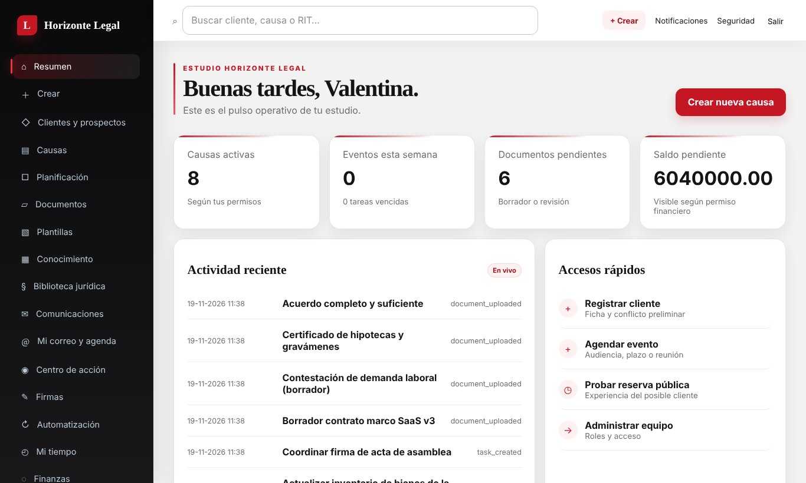
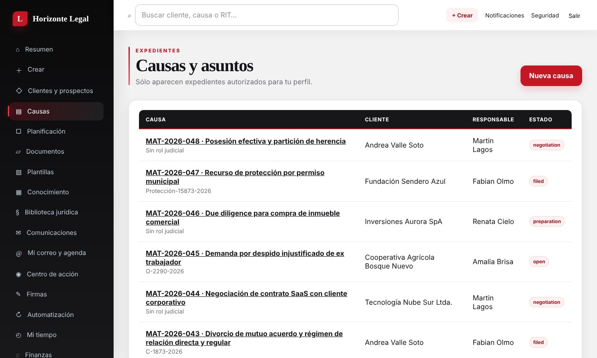
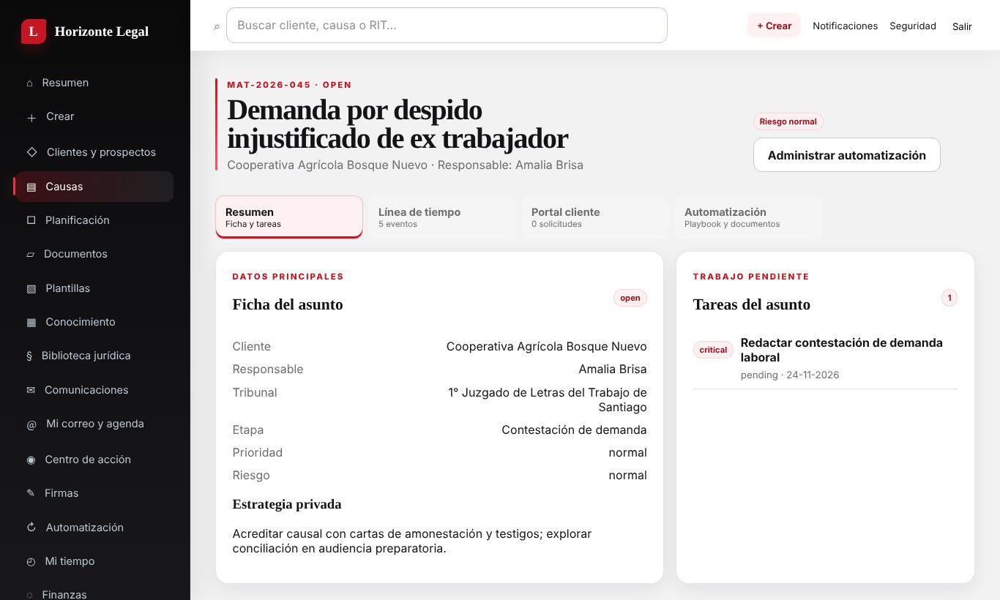
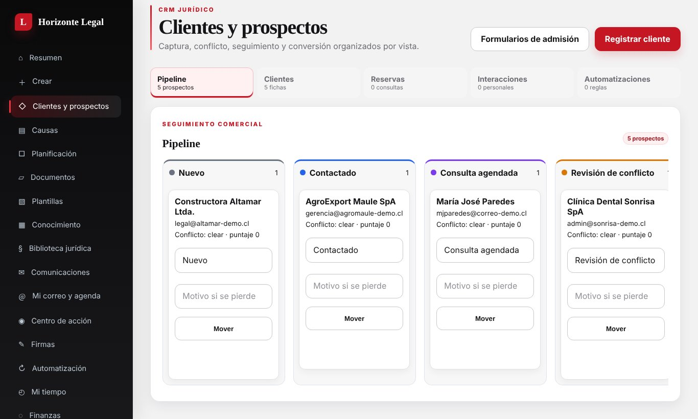
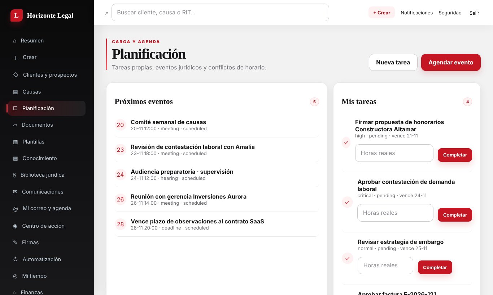
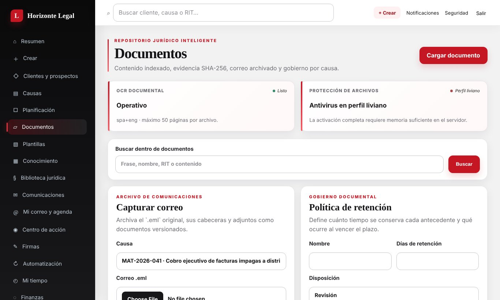
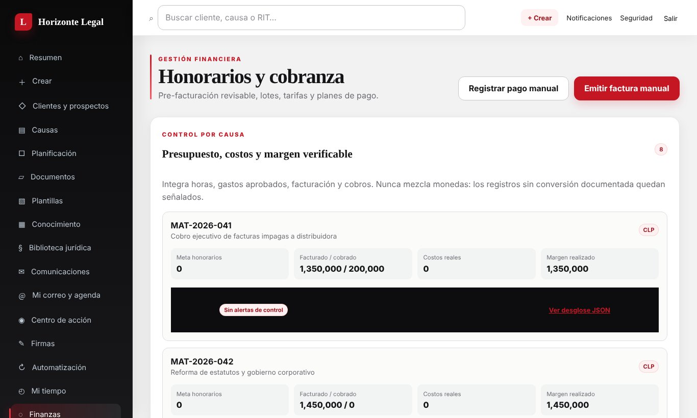
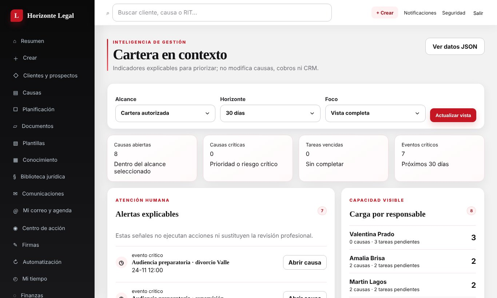
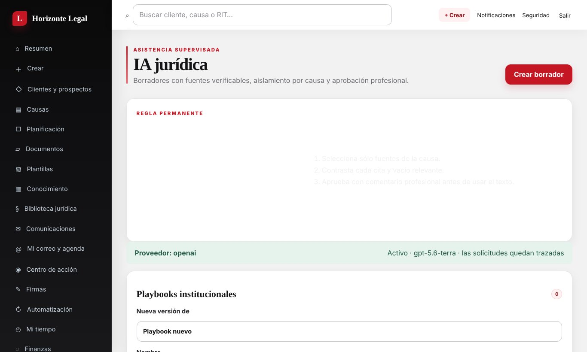

CRM jurídico y prospectos
Pipeline de prospectos con revisión de conflicto de interés, fichas de clientes y formularios de admisión.
LegalFlex ordena el trabajo de un estudio jurídico: clientes y prospectos con revisión de conflicto, causas con tribunal y plazos, documentos con evidencia, firmas, honorarios y cobranza, e IA jurídica supervisada, con acceso seguro por roles.
portalestudiojuridico.integralflex.clParte de IntegralFlex Suites
LegalFlex es la plataforma de IntegralFlex Suites para estudios jurídicos y departamentos legales. Reúne en un solo lugar el ciclo completo de un asunto: desde que el prospecto agenda una consulta y se revisa el conflicto de interés, hasta la tramitación de la causa, la emisión de documentos y firmas, y el cobro de honorarios.
Cada causa guarda su tribunal, rol o RIT, etapa, riesgo, estrategia privada y una línea de tiempo verificable. Los documentos quedan versionados con huella digital, la IA genera borradores con fuentes que siempre revisa un profesional, y la socia o el socio ve la cartera, la carga del equipo y el margen por causa.
Pipeline de prospectos con revisión de conflicto de interés, fichas de clientes y formularios de admisión.
Cada causa con tribunal, rol o RIT, procedimiento, etapa, riesgo, estrategia privada y línea de tiempo verificable.
Audiencias, plazos fatales y reuniones con alertas de eventos críticos y conflictos de horario.
Repositorio versionado con huella SHA-256, OCR, búsqueda en el contenido y políticas de retención.
Generación de escritos desde plantillas y biblioteca de normas y criterios para el equipo.
Envío de documentos a firma con enlaces por firmante y registro de cada etapa.
Horas por causa y por abogado, con costo interno y control de la carga del equipo.
Facturas, planes de pago, pagos en línea (Webpay, Mercado Pago) y margen por causa.
Borradores con fuentes verificables, aislamiento por causa y aprobación profesional obligatoria.
Correos archivados por causa, solicitudes de antecedentes y portal para que el cliente siga su asunto.
Indicadores de causas críticas, tareas vencidas, eventos y carga por responsable.
Acceso por organización, roles por función, MFA y evidencia de cada acción sensible.
Pantallas reales del sistema con un estudio de demostración: clientes, causas, roles y montos son ficticios.









El prospecto llega por la reserva pública o el formulario y se revisa el conflicto de interés.
Se crea el expediente con tribunal, rol, responsable, plazos y estrategia.
Tareas, agenda, documentos, firmas e IA supervisada en el mismo expediente.
Honorarios, pagos y margen por causa, con indicadores de cartera para la socia o el socio.
Flask + PostgreSQL con worker y Redis, desplegada en contenedores
Organización, correo y contraseña, MFA y roles por función (socio, abogado, procurador, secretaria, contabilidad, auditor, cliente)
Microsoft 365, Google Workspace, Twilio, Zoom, Webpay, Mercado Pago, firma electrónica y Oficina Judicial Virtual
Bloqueo tras intentos fallidos, evidencia de acciones sensibles y aislamiento por causa
Webpay Plus y Mercado Pago, con conciliación y fondos de clientes
portalestudiojuridico.integralflex.cl
Desde USD 6,9 por usuario al mes según el tamaño de tu equipo. Cotiza en línea o escríbenos y coordinamos una demo con tus datos.